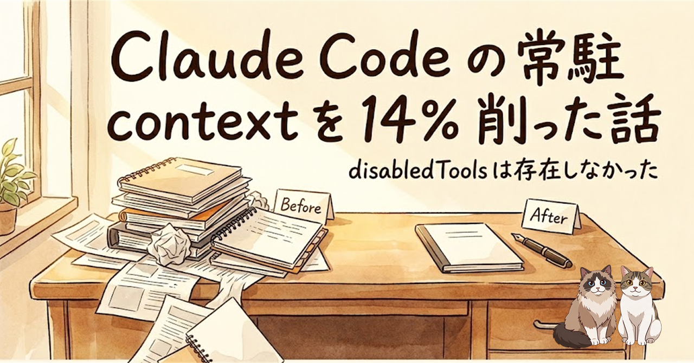
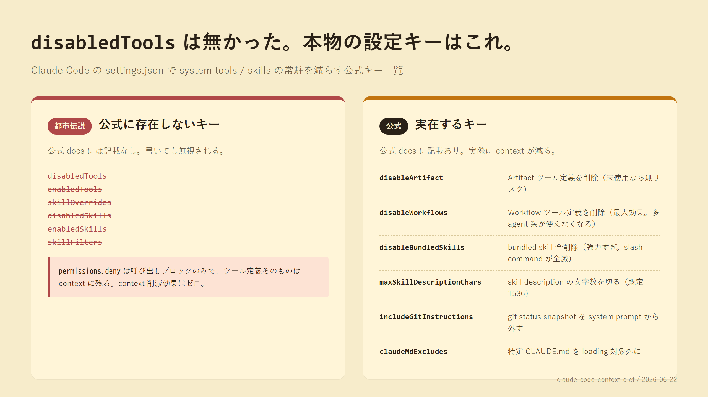
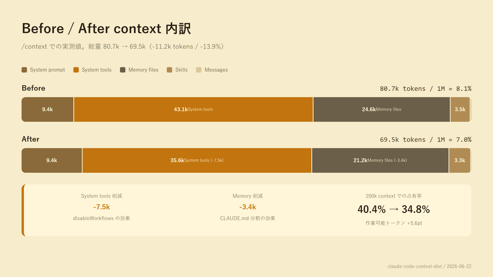

Claude Code をしばらく使っていて、ふと /context を開いたら、何もしていないのに 80.7k tokens が常駐していました。1M context のモデルだから割合では 8%、誤差みたいなものです。ただ、200k context のモデルに切り替えた瞬間にこれは 40%。前提条件で半分近く食う計算になります。
ここから何が無駄に載っているのか棚卸しを始めて、最終的に 常駐 context を 11.2k tokens / 約 14% 削れました。途中で「公式ドキュメントに disabledTools というキーは存在しなかった」という地味に大きな発見もあったので、Zenn の体験談版より構造化した詳細メモとして残しておきます。
Claude Code には /context というスラッシュコマンドがあり、現在のセッションが何にトークンを使っているか分解して見せてくれます。手元での内訳:
| カテゴリ | 消費 tokens | 性質 |
|---|---|---|
| System prompt | 9.4k | Claude 固定。触れない |
| System tools | 43.1k | ツール JSON schema。設定で削れる可能性あり |
| Memory files | 24.6k | CLAUDE.md など。自分で書いたもの |
| Skills | 3.5k | 登録 skill のメタデータ |
| Messages（会話本体） | 80 | ほぼゼロ |
| 合計 | 80.7k / 1M tokens (8.1%) | |
Messages が 80 tokens なのに合計 80.7k。「何もしていない時点で 80.6k は固定で載っている」状態です。
特に Memory files の 24.6k が引っかかりました。これは ~/.claude/CLAUDE.md などの設定ファイル群で、AI に「こう振る舞ってね」を伝えるための地の文です。長年運用しているうちに、手元では 600 行を超える分量になっていました。
CLAUDE.md の中身を分類してみると、こうなっていました。
| 章 | サイズ | 性質 |
|---|---|---|
| 略記ルール、自動生成ショートカット、出力フォーマット規約など | 残す必要あり | 毎ターン判定材料 |
| コーディング規範 6 章（根本原因優先・憶測断定の禁止・UX 最優先 など） | 約 70 行 | コードに触る時にしか発火しない |
| 家族情報の参照ルール、KB 統合、CLI 配布方針、npm トークン場所 | 各 10〜30 行 | 特定の話題が出た時にだけ必要 |
| pending メモの簡易ルール | 14 行 | pending を作る時にだけ要る |
「毎ターン判定材料として要るもの」と「トリガーされた時にだけ Read すればいいもの」を分けられることに気づきました。後者は別ファイルに切り出し、CLAUDE.md からは 3〜5 行のトリガー文だけ残せば、本文の数 k 分が常駐から消えます。
| 元章 | サブファイル化先 |
|---|---|
| コーディング規範 6 章 | ~/.claude/guides/rule_coding-stance.md |
| 家族情報の連携 | ~/.claude/guides/reference_family-references.md |
| pending メモのルール | ~/.claude/guides/pending_rules.md |
| npm トークン復旧手順 | 既存の参照ガイドに追記 |
VPS デプロイ手順 / リリース配布インフラ（プロジェクト側 CLAUDE.local.md） | プロジェクト docs/local/ 配下 |
Memory が 24.6k → 21.2k に減って 3.4k 浮いた状態。次は System tools の 43.1k に手を入れる番です。「settings.json に disabledTools を書いて不要なツール切ればいい」と思って公式 docs を当たったら、そんなキーは無い。

disabledTools
enabledTools
skillOverrides
disabledSkills
enabledSkills
skillFilters
permissions.deny は呼び出しブロックのみで、ツール定義そのものは context に残る。context 削減効果はゼロ。
disableArtifact
disableWorkflows
disableBundledSkills
maxSkillDescriptionChars
includeGitInstructions
claudeMdExcludes
「実行を止める」と「context を減らす」は別レイヤー。これ、混同しがちでした。AI に「disabledTools 使えるよね」と聞くと最初は「使える」と返ってきます（実際にやられた）。一次情報を当たるのは本当に大事。
| キー | 効果 | 推定削減 | リスク |
|---|---|---|---|
disableArtifact: true |
Artifact ツール定義を削除（claude.ai へセッション出力公開機能） | < 500 tokens | 無リスク 未使用なら影響なし |
disableWorkflows: true |
Workflow ツール定義削除 + bundled workflow コマンド無効化 | 5〜10k tokens （最大効果） |
中 多 agent / ultracode / workflow 依存 skill が使えなくなる |
disableBundledSkills: true |
bundled skill 群を context から削除 | 〜1.7k tokens | 過激 /loop /schedule /run /verify /code-review 等が全部封印 |
maxSkillDescriptionChars: 512（既定 1536） |
各 skill の description を切り詰める | 〜1.5k tokens | 中 skill 起動の感度が落ちる |
includeGitInstructions: false |
git status snapshot を system prompt から除去 | 〜1k tokens | 中 「直近コミット何だっけ」を毎回 git log する必要が出る |
claudeMdExcludes: [...] |
特定 CLAUDE.md を loading 対象から除外 | 環境次第 | 中 誤って必要な CLAUDE.md を除外する事故 |
{
"disableArtifact": true
}{
"disableArtifact": true,
"disableWorkflows": true
}{
"disableArtifact": true,
"disableWorkflows": true,
"disableBundledSkills": true,
"maxSkillDescriptionChars": 512,
"includeGitInstructions": false
}
新しいセッションを起こして /context を再実行（編集前の context を持つ既存セッションでは正確な値が出ない）。

| カテゴリ | Before | After | 削減 |
|---|---|---|---|
| Total | 80.7k (8.1%) | 69.5k (7.0%) | -11.2k（-13.9%） |
| System prompt | 9.4k | 9.4k | 0 |
| System tools | 43.1k | 35.6k | -7.5k（disableWorkflows） |
| Memory files | 24.6k | 21.2k | -3.4k（CLAUDE.md 分割） |
| Skills | 3.5k | 3.3k | -0.2k |
11.2k tokens / ターン削減の per-turn 価値を、主要モデルで Medium effort 相当の input 単価で計算（cache miss 時）。
| モデル | input $/1M | per turn 節約 | 1 日 50 ターン × cache miss 30% |
|---|---|---|---|
| Claude Opus 4.8 | $5.00 | $0.056（約 8 円） | 約 $0.84 / 日（約 126 円） |
| Claude Sonnet 4.6（4.5 と同価） | $3.00 | $0.034（約 5 円） | 約 $0.50 / 日（約 76 円） |
| GPT-5.5 standard | $5.00 | $0.056（約 8 円） | 約 $0.84 / 日（約 126 円） |
| GPT-5.4 | $2.50 | $0.028（約 4 円） | 約 $0.42 / 日（約 63 円） |
disableWorkflows: true で連動して落ちた。使っていなかったので問題なしだったが、deep research に依存している人は disableWorkflows は入れない判断もあり/code-review ultra はクラウド側で動く別経路と確認しており、こちらは影響なしの見込み（ただし 100% 保証は無い）| 項目 | 注意 |
|---|---|
| バックアップ必須 | CLAUDE.md / settings.json 編集前に *.bak.YYYY-MM-DD を取る。事故時に即戻せる状態を作ってから着手 |
| 新セッションで実測 | 編集前の context を持つ既存セッションでは正確な値が出ない。必ず新セッションで /context |
| 復活は 1 行削除 | Workflow / ultracode が必要になったら settings.json の "disableWorkflows": true を削除して再起動 |
| トリガー判定漏れ | サブファイル化で起こりやすい事故。「明示的・grep 可能な語彙」でトリガー文を書く |
| 環境依存 | 削減幅は環境に強く依存。すでにスリムな人は誤差で終わる可能性大 |
この記事で使った「コンテキスト棚卸し → トリガー化分割 → settings.json チューニング」の手順を、他の人が自分の環境に適用できるように簡易の md スキルとして配布します。
| 場所 | 内容 |
|---|---|
github.com/ishizakahiroshi/claude-code-context-diet | README + SKILL.md + playbook + 公式キーリファレンス + CLAUDE.md 分割パターン例。MIT ライセンス |
| Zenn 体験談版 | 同じ題材をやわらかい体験談として書いたもの。読者が「やってみよう」と思える温度を狙った |
スキル形式に乗らない場合は repo の docs/playbook.md を手で読みながらやっても同じ結果になります。
disabledTools 使えるよね」と聞くと最初は肯定で返ってきた。公式 docs を読まずに「ありそうなキー名」で settings.json を書こうとすると、実在しないキーを生やしてしまう。
permissions.deny を「context 削減」と混同しない。あれは実行制御。読み込み制御とは別レイヤー。
disableWorkflows は強力だが依存スキルも連動で消える。入れる前に「ワークフロー使う場面あるか」を一度自問してから。